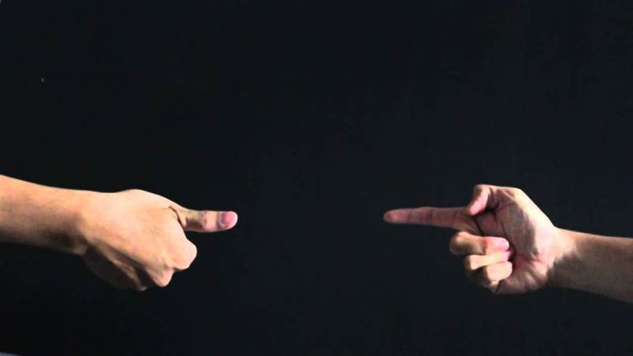

Sejarah

Suit ini diperkirakan pertama kali ada di Cina dan sudah sejak ribuan tahun yang lalu pada zaman kerjaan
dinasti Han Cina. Pada mulanya permainan ini disebut shoushiling yang berarti tiga orang yang takut satu
sama lain.
Awal mula suit Cina Tidak seperti sekarang dengan pilihan batu, gunting dan kertas, tetapi melainkan katak,
siput, dan ular. Yang dimana jempol melambangkan katak, kelingking siput, dan telunjuk sebagai ular.
Permainan juga menyebar ke Jepang, Di Jepang permainan ini dikenal sebagai janken atau jankenpon yang
populer sekitar tahun 1600-an.
Permainan ini sering digunakan di Jepang untuk menyelesaikan masalah serta untuk mengambil keputusan di
berbagai bidang, seperti bisnis, sosial, hingga politik.
Permainan juga menyebar ke Jepang, Di Jepang permainan ini dikenal sebagai janken atau jankenpon yang
populer sekitar tahun 1600-an.
Permainan ini sering digunakan di Jepang untuk menyelesaikan masalah serta untuk mengambil keputusan di
berbagai bidang, seperti bisnis, sosial, hingga politik.
Demikian inilah asal usul Suit yang pasti sudah sangat familiar untuk kita, terutama waktu dahulu pas masih
kecil, suit ini sering digunakan untuk menentukan pemenang dana suatu permainan